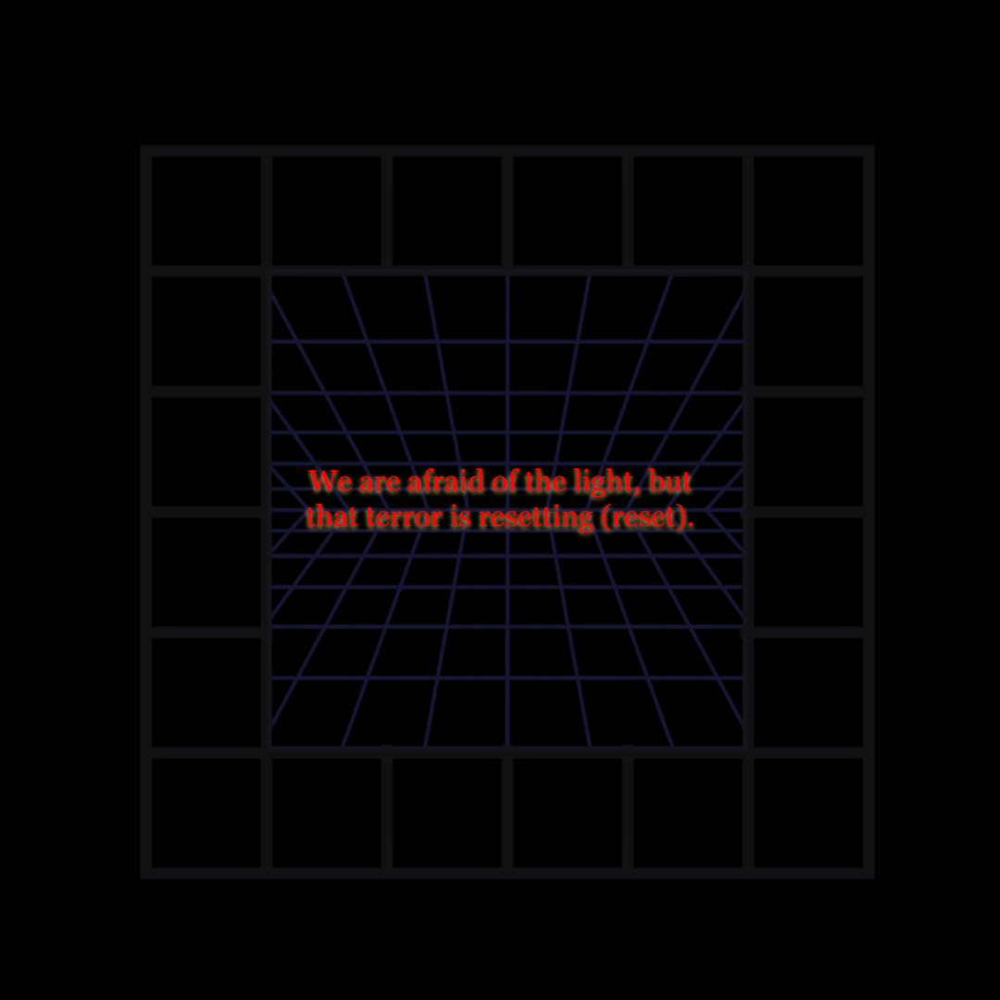
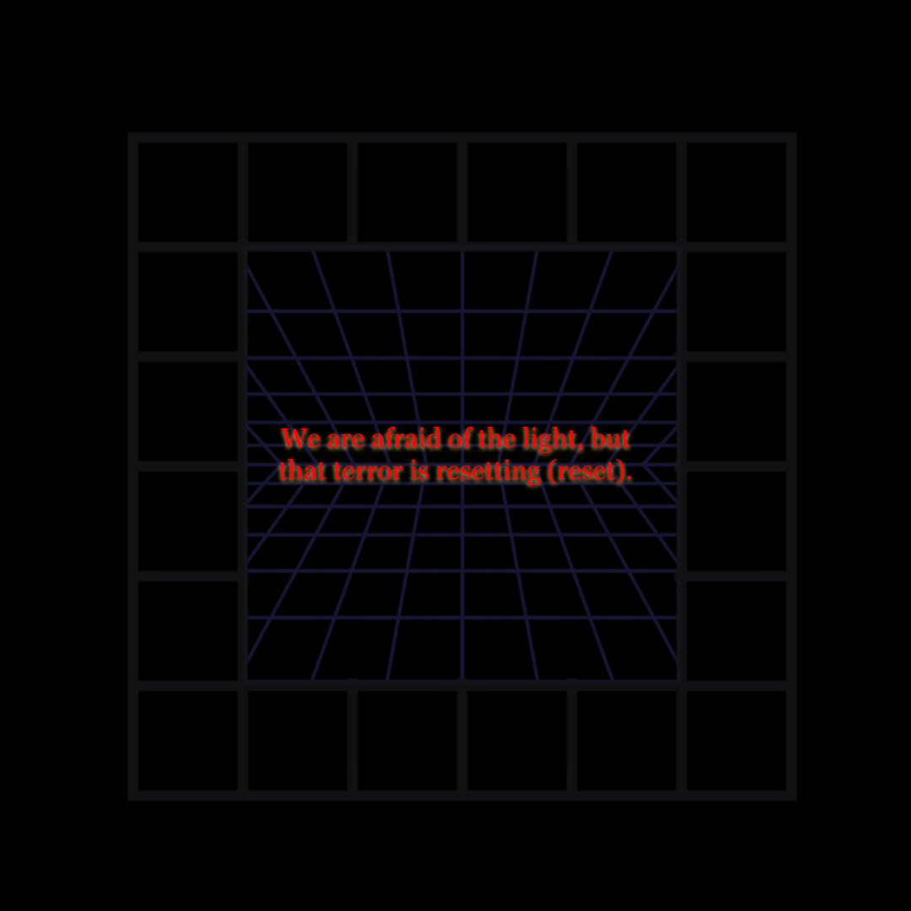
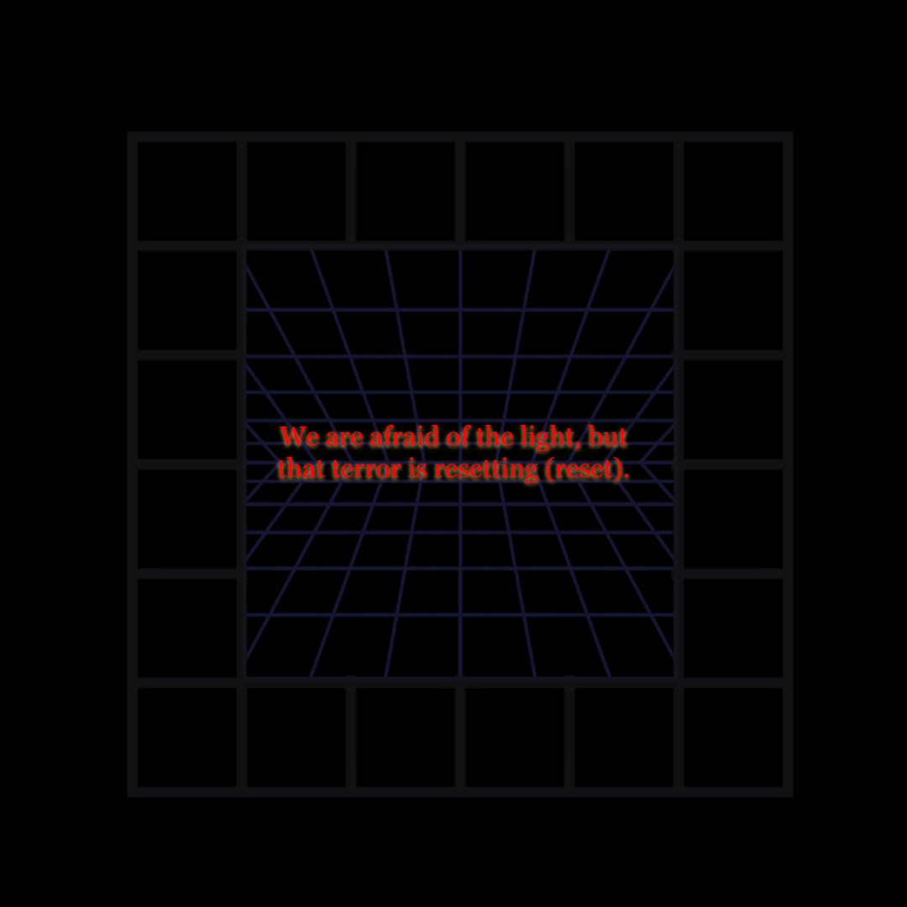
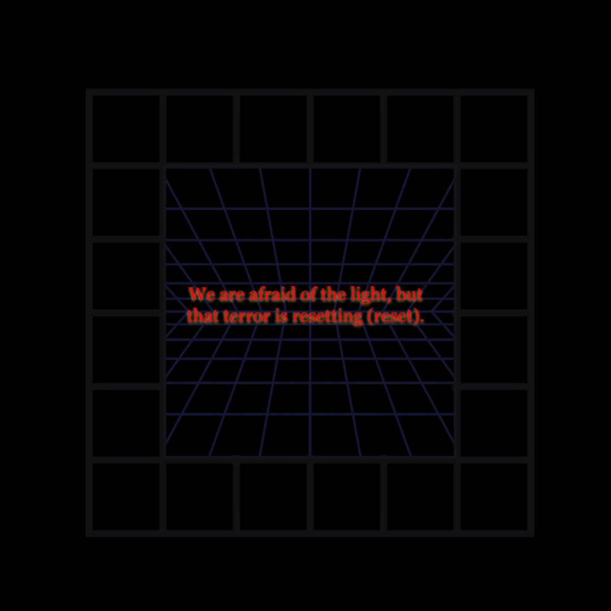
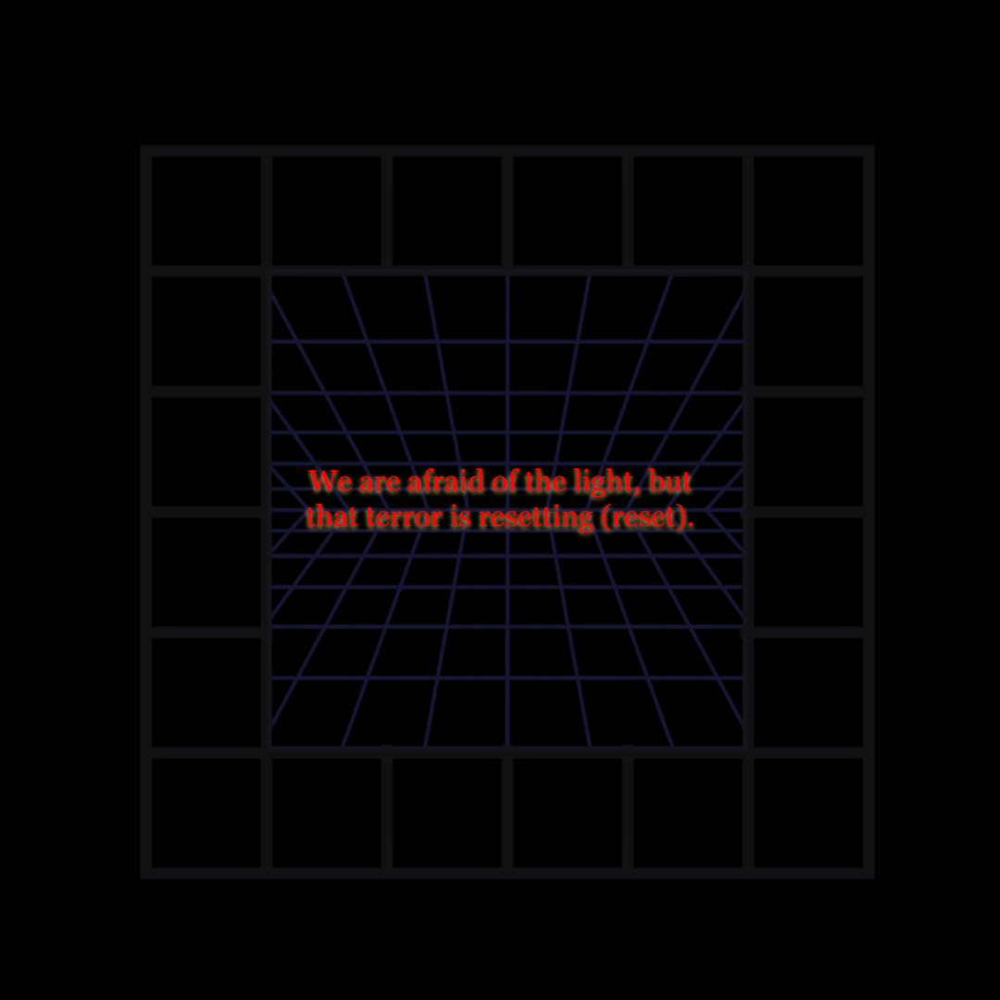

Merch
Redes Sociales
Merch
T-Shirts y Hoddies

Haz Clic aqui para ver la Pagina completa
Redes Sociales
Haz click aqui para acceder a mi canal de Youtube.
Haz click aqui para acceder a mi cuenta de Twitter.
Haz click aqui para acceder a mi canal de Soundcloud.
 

 
